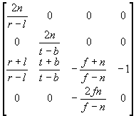

#include <nitro/gx/g3_util.h>
void G3_FrustumW( fx32 t, fx32 b, fx32 l, fx32 r, fx32 n, fx32 f, fx32 scaleW, MtxFx44 * mtx );
| t | Y coordinate at the top of the near clipping plane |
b |
Y coordinate at the bottom of the near clipping plane |
| l | X coordinate at the left of the near clipping plane |
| r | X coordinate at the right of the near clipping plane |
| n | Distance from eyepoint to the near clip plane |
| f | Distance from eyepoint to the far clip plane |
| scaleW | Fine adjustment parameter for the view volume |
| mtx | The pointer to a 4x4 matrix. |
None.
This function sets the Matrix mode to the Projection mode. This function also sets the Frustum matrix as the current matrix. If mtx is not NULL, then the Frustum matrix is also set in *mtx. This function uses the Divider. The diagram shows the matrix that is set.
 × scaleW
G3_Frustum, G3_PerspectiveW, G3_OrthoW
04/27/2004 Initial version
CONFIDENTIAL